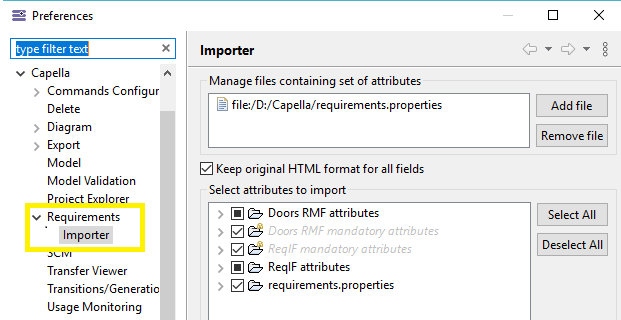

When you deal with custom attributes, be aware to keep them updated. Do NOT forget to rename the attributes either in properties file or in Eclipse extension point if you rename them in DOORS/ReqIF, otherwise they will not be imported.
The label of the requirements can be customized through an Acceleo expression in the Requirements Preference page (Capella > Requirements).
Click Window > Preferences > Capella > Requirements to open this preference page.

The default expression shows a Requirement based on its IE_PUID attribute if any, concatenated with one of the following attributes Text, LongName or ChapterName:
IE_PUID? (Text|LongName|ChapterName)
The length of requirement's label can be specified (default = 80, nothing = full label , x = size and "..." ) It is also possible to truncate the displayed requirement label if the length exceed
The last preference option is the "Force DOORS RMF usage check while importing requirements", if checked, this will force the importer to import requirements only having IE PUID and IE Object Type, so requirements with no IE PUID and IE Object Type will be omitted.
You should keep this preference unchecked if you are not using IE PUID and IE Object Type for your requirements.
The scope of data to import can be customized in the Importer preference page (Capella > Requirements > Importer):
You are not allowed to rename the set of attributes shipped in the add-on.
If the DOORS add-on called IRDRMFAO is installed also, all attributes which start with "IE" are also not allowed to be renamed.
Any change to the attributes name will harm the add-on and prevent it from properly importing your data.
To choose the set of attributes to be imported, check the corresponding line in the tree (some attributes are defined as 'mandatory' and cannot be deselected).
IE PUID IE Object Type Object Text Object Heading Object Short Text IE Req Status IE Test Method Expected IE IVV Method RCM Version IE Req Version
Attribute1Name:defaultSelectionState Attribute2Name:defaultSelectionStateThen add the properties file in the first part of the preference dialog by clicking on "Add file". Once the added attributes are shown in the tree, you can select the attributes you need to import if they are not selected by default.
In the screenshot above, the following file was used:
Requirement\ Author:true Requirement\ Identifier:false Requirement\ State:false
The list of attributes to be imported can be enhanced by contributing to an extension point (see Programmer's Guide).
|
When you deal with custom attributes, be aware to keep them updated. Do NOT forget to rename the attributes either in properties file or in Eclipse extension point if you rename them in DOORS/ReqIF, otherwise they will not be imported. |